Erklärung
Versionskontrolle
Unter einer Versionskontrolle versteht man ein System, welches Veränderungen innerhalb einzelner Dateien speichert bzw. archiviert. Mit Hilfe eines solchen Systems können Dateien auf eine beliebige, frühere "Version" zurückgesetzt werden. Auch ein Vergleich von verschiedenen Versionen einer oder mehrerer Dateien ist möglich. Somit erhöht die Nutzung einer Versionskontrolle die Datensicherheit, da das Risiko eines kompletten Datenverlustes verringert wird.Im Folgenden werden drei verschiedene "Typen" von Versionskontrollen kurz erläutert:
Bevor es Versionskontrollen gab, haben viele Nutzer gerne Dateien einfach in einen anderen Ordner kopiert.
Diese Methodik mag zwar sehr simple sein,
jedoch stellt sich diese auch als sehr fehleranfällig heraus. So können beispielsweise Fehler durch den Nutzer entstehen, welcher nicht mehr durch seine eigene Ordnerstruktur durchblickt.
Zur Lösung dieses Problems wurden schon relativ früh erste Systeme zur Versionskontrolle programmiert. Bei diesen Systemen handelt es sich um lokale Lösungen mit simplen Datenbanken, welche Veränderungen an Dateien archivieren/versionieren. Allerdings ist ein kolaboratives Arbeiten mit solchen Systemen nicht möglich, da die Versionskontrollen lediglich lokal stattfinden.
Ein Beispiel für ein solches System stellt "Revision Control System" (RCS) dar.
jedoch stellt sich diese auch als sehr fehleranfällig heraus. So können beispielsweise Fehler durch den Nutzer entstehen, welcher nicht mehr durch seine eigene Ordnerstruktur durchblickt.
Zur Lösung dieses Problems wurden schon relativ früh erste Systeme zur Versionskontrolle programmiert. Bei diesen Systemen handelt es sich um lokale Lösungen mit simplen Datenbanken, welche Veränderungen an Dateien archivieren/versionieren. Allerdings ist ein kolaboratives Arbeiten mit solchen Systemen nicht möglich, da die Versionskontrollen lediglich lokal stattfinden.
Ein Beispiel für ein solches System stellt "Revision Control System" (RCS) dar.
Um ein kolaboratives Arbeiten zu ermöglichen, wurden zentrale Systeme zur Versionskontrolle entwickelt.
Hierbei liegt die gesamte Versionsverwaltung mitsamt Dateien auf einem zentralen Server/Repository.
Die willigen Nutzer müssen nun die Dateien von diesem Server/Repository "herunterladen" (checkout) und ggf. neue Versionen wieder
"hochladen" (commit). Hierbei werden jedoch nur die Veränderungen als solche gespeichert. In den meisten Fällen werden die Server/Repositories von einem Administrator kontrolliert, der
bestimmen kann, welcher Nutzer an welchen Dateien arbeitet. Zudem kann der Administrator bestimmen, welche Änderungen in das
bestehende System mit einfließen und welche verworfen werden.
Der Nachteil einer zentralen Versionskontrolle ist die "Verwundbarkeit" des Systems. Sollte der zentrale Server ausfallen, so ist evt. ein kolaboratives Arbeiten für eine gewisse Zeitspanne nicht möglich. Des Weiteren kann ein kompletter Datenverlust entstehen, wenn die Datensätze auf dem Server/Repository korrumpieren
(insofern kein vernünftiges Backup-System vorhanden ist).
Beispiele für zentrale Versionskontrollen:
- "Concurrent Versions System" (CVS)
- "Subversion" (SVN)
Der Nachteil einer zentralen Versionskontrolle ist die "Verwundbarkeit" des Systems. Sollte der zentrale Server ausfallen, so ist evt. ein kolaboratives Arbeiten für eine gewisse Zeitspanne nicht möglich. Des Weiteren kann ein kompletter Datenverlust entstehen, wenn die Datensätze auf dem Server/Repository korrumpieren
(insofern kein vernünftiges Backup-System vorhanden ist).
Beispiele für zentrale Versionskontrollen:
- "Concurrent Versions System" (CVS)
- "Subversion" (SVN)
Bei einer dezentralen Versionskontrolle bekommen die Nutzer keinen "Checkout" der aktuellsten Dateien.
Stattdessen bekommen die Nutzer einen kompletten Klon des gesamten Repositories.
Somit besitzt jeder Nutzer theoretisch ein vollwertiges Backup des Repositories.
Des Weiteren ist es möglich, mit mehreren entfernten Repositories (remotes) zu arbeiten, wodurch ein
kolaboratives Arbeiten gefördert wird. Beim "Hochladen" eines Projektes, wird dieses
als neue Version gekennzeichnet. Jede Version beinhaltet eine Sammlung an "Snapshots" für die verschiedenen
Veränderungen an den Dateien.
Beispiele für dezentrale Versionskontrollen:
- Git
- Mercurial
- Bazaar
- Darcs
Beispiele für dezentrale Versionskontrollen:
- Git
- Mercurial
- Bazaar
- Darcs
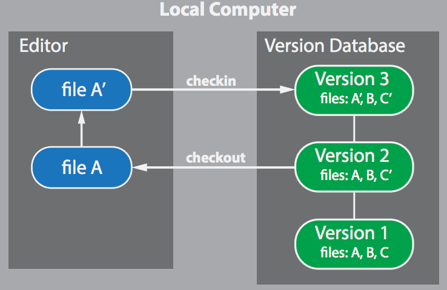
Lokale Versionskontrolle
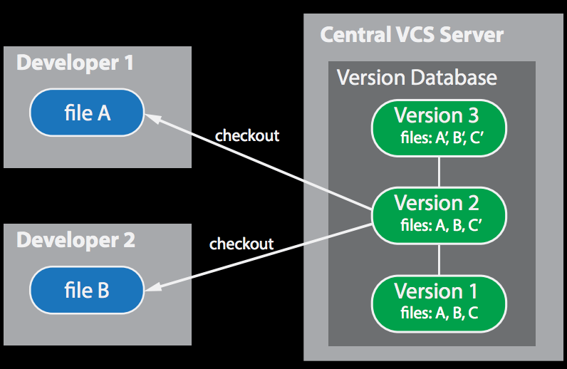
Zentrale Versionskontrolle
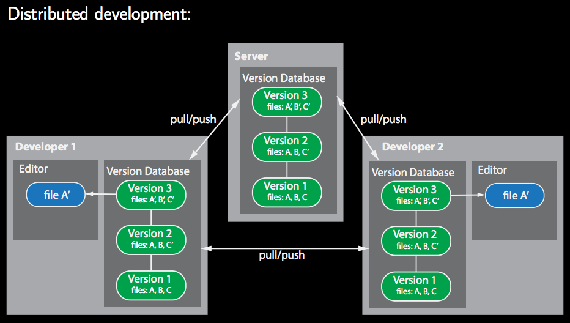
Dezentrale Versionskontrolle
Das Repository
Bei einem Repository handelt es sich um einen zentralen Speicherort für Dateien. Ein Repository wird von den meisten Versionskontrollsystemen verwendet, um die verschiedenen Versionen der Dateien zu speichern.In der Linux-Welt werden Repositories verwendet, um Software zu speichern/zugänglich zu machen. Anders als in Windows, wo Software über ein Setup-Programm installiert werden kann, liegt die Software in den meisten Linux-Systemen auf zentralen Repositories. Der Nutzer kann von diesen Repositories die benötigten Pakete herunterladen und installieren. Die meisten Linux-Betriebssysteme haben ein zentrales Repository, auf dem geprüfte Software lagert. Natürlich können aber auch andere Repositories (z.B für bestimmte Software) verwendet werden.
Das Wort Repository stammt von dem lateinischen repositorium (Lager) ab!
Dies ist ein verwalteter Ort zur Aufbewahrung von geordneten Dokumenten, welcher einem bestimmten Nutzerkreis (oder allen) zugänglich ist.
Dies ist ein verwalteter Ort zur Aufbewahrung von geordneten Dokumenten, welcher einem bestimmten Nutzerkreis (oder allen) zugänglich ist.
Wie speichert git die Daten?
Der Unterschied zwischen git und anderen Versionskontrollen liegt darin, wie mit den gespeicherten Daten umgegangen wird. Die meisten anderen Versionskontrollen speichern die Veränderungen basierend auf den einzelnen Dateien ab. Git hingegen speichert eine Ansammlung an Snapshots. Sollte eine Datei verändert werden,erstellt git einen Snapshot dazu und speichert eine Referenz zu diesem Snapshot ab. Sollte eine Datei nicht verändert werden, erstellt git in der neuen Version des Projektes einfach nur eine Verlinkung auf die letzte veränderte Version dieser Datei.
Ein Snapshot stellt in diesem Sinne ein Abbild von einer Datei dar.
Mit Hilfe eines Snapshots wird der momentane Status einer Datei festgehalten.
Somit ist es möglich, "Momentaufnahmen" einzelner Dateien anzufertigen.
Mit Hilfe eines Snapshots wird der momentane Status einer Datei festgehalten.
Somit ist es möglich, "Momentaufnahmen" einzelner Dateien anzufertigen.
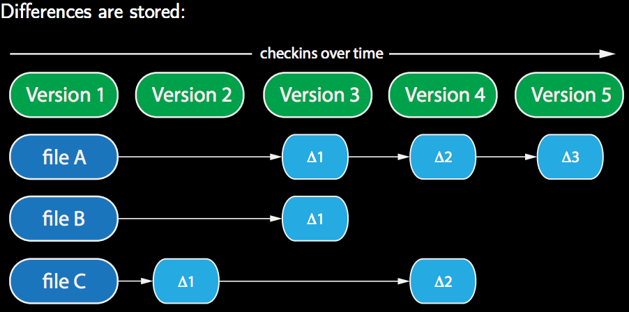
Speichern der Veränderungen basierend auf den Dateien
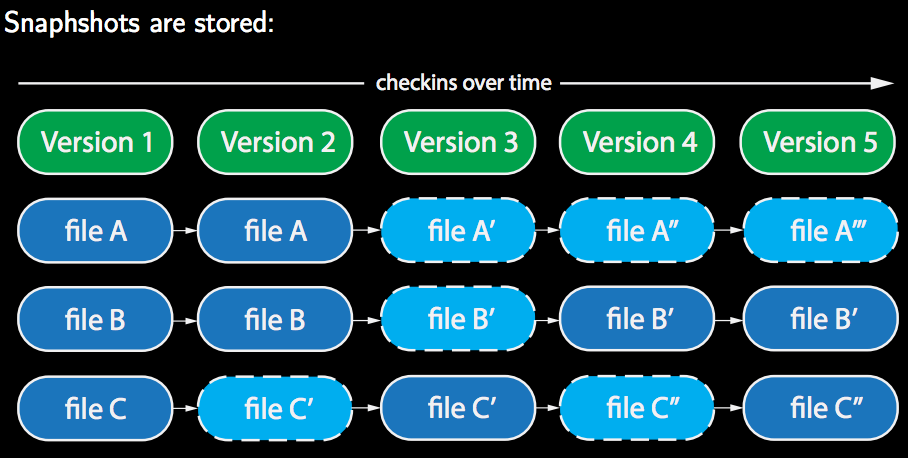
Speichern der Snapshots
Die drei Stationen
In git kann eine Datei drei verschiedene Statuus haben: "modified", "staged" und "committed".Dateien mit dem Status "modified" sind Dateien, welche seit dem letzten Checkout verändert, aber nicht committed wurden.
Dateien mit dem Status "staged" sind Dateien, welche für den nächsten Commit markiert wurden. Diese Dateien werden beim nächsten Commit in das Repository hochgeladen.
Dateien mit dem Status "committed" wurden in das Repository hochgeladen.
Demnach gibt es in git auch drei "Stationen" in denen sich die Dateien aufhalten können:
"Working directory", "Staging area" und "Git directory (Repository)".
Das "Working directory" ist das Verzeichnis, in welchem der Nutzer arbeitet. Die modifizierten Dateien liegen logischerweise zunächst dort.
Die "Staging area" ist kein Verzeichnis, sondern eine Datei, welche die Information enthält, welche Dateien als nächstes committed werden sollen.
Das "Git directory" enthält die Objekt-Datenbank zuzüglich der entsprechenden Metadaten. Die Snapshots werden hier gelagert.
"Checkout" = Daten werden heruntergeladen
"Comit" = Daten werden hochgeladen
"Comit" = Daten werden hochgeladen
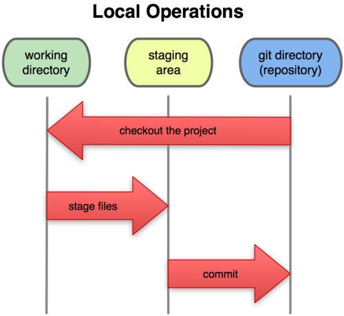
Die drei Stationen
Lebenszyklus der Dateien
Wie im vorherigen Kapitel erwähnt, kann eine Datei einen von mehreren Statuus haben.Grundlegend gibt es in git aber nur zwei Arten von Dateien: "Untracked"- und "tracked"-Dateien.
"Tracked"-Dateien sind alle Dateien, welche im letzten Snapshot enthalten waren. Diese Dateien wiederum können dann noch den Status "unmodified" "modified" "staged" oder "committed" besitzen. "Untracked"-Dateien hingegen sind alle anderen Dateien, welche nicht im letzten Snapshot enthalten waren und auch noch nicht den Status "staged" erhielten.
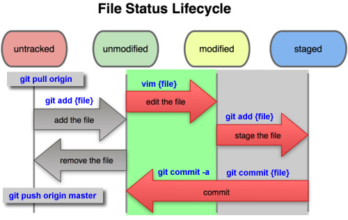
Lebenszyklus der Dateien
Arbeiten mit Remotes
Um ein kolaboratives Arbeiten zu ermöglichen, wird ein gemeinsames Repository im Netzwerk benötigt.Bisher wurde in den vorherigen Kapiteln beschrieben, wie Änderungen im lokalen Repository gespeichert werden können.
Dieses lokale Repository ist jedoch nicht für andere Mitarbeiter erreichbar.
Änderungen, welche im lokalen Repository gespeichert wurden, können mit dem "git push [Ziel Repository] [Branch]" Kommando in das gemeinsame Repository gespeichert werden. Allerdings ist zu beachten, dass niemand Anderes zuvor seine Änderungen "hochgeladen" hat. Sollte dies der Fall sein, wird das eigene "git push" Kommando nicht ausgeführt. Die Änderungen im gemeinsamen Repository müssen erst in das eigene, lokale Repository "heruntergeladen" und integriert werden.
Erst dann kann das eigene "git push" Kommando ausgeführt werden.
Änderungen, welche im gemeinsamen Repository gespeichert wurden, können mit dem "git fetch [Quelle (Repository)]" Kommando in das eigene, lokale Repository "heruntergeladen" werden. Jedoch werden diese Änderungen noch nicht integriert. Hierfür ist noch das "git merge" Kommando (siehe Kapitel Branching) erforderlich.
Eine Abkürzung stellt das "git pull [Quelle (Repository)] [Branch]" Kommando dar. Hierbei werden die beiden Kommandos "git fetch" und "git merge" ausgeführt.
Eine weitere Besonderheit von git ist, dass Änderungen aus mehreren, gemeinsamen Repositories in das eigene, lokale Repository "heruntergeladen" werden können.
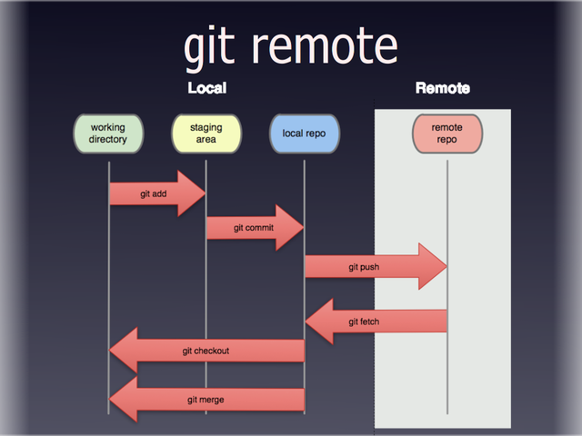
Git-Remote
Branching
Bei Branches handelt es sich um "Abzweigungen" im git Repository. Mit Hilfe dieser "Abzweigungen" können Entwickler an Features arbeiten,ohne den "Hauptzweig" zu gefährden. "Zweige" können nicht nur erstellt, sondern auch wieder zusammengeführt werden.
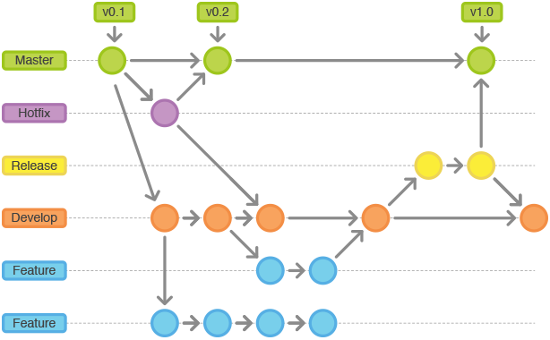
Git branches
Branches können in git ganz einfach mit dem "git branch [Branch-Name]" Kommando erstellt werden. Hierbei wird ein neuer "Zeiger", welcher auf den aktuellen Commit zeigt, erstellt. Sobald nun ein neuer Commit entsteht, bewegt sich der neue Zeiger mit, während der alte Zeiger noch beim vorherigen Commit verweilt. Möchte man nun den Zeiger wechseln, verwendet man das "git checkout [Branch-Name]" Kommando.
Woher weiss git nun, auf welchem Zeiger momentan gearbeitet wird?
Hierfür verwendet git den speziellen Zeiger "HEAD", welcher immer auf den Branch/Commit zeigt, der gerade verwendet wird.
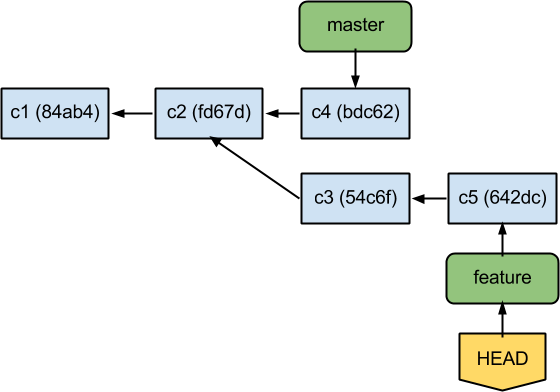
Einfaches Branching
Um zwei Branches wieder zusammenzuführen, wird das "git merge [Branch-Name]" Kommando verwendet.
Hierbei wird der Branch, auf welchem sich der "HEAD"-Zeiger befindet, mit dem Branch, welcher dem Befehl übergeben wird, zusammengeführt.
Unterscheiden sich diese beiden Branches nur durch einen Commit, so wird ein "Fast-Forward" ausgeführt. Hierbei wird der Zeiger einfach nach vorne bewegt,
da es keinen Kombinationsaufwand gibt und der Vorgang wie ein einfacher Commit behandelt werden kann.
Wenn eine Datei in beiden Branches unterschiedliche Änderungen aufweist, kommt es zu einem "Merge-Konflikt". Git weiss an dieser Stelle nicht, welche Änderung er für den neuen, zusammgeführten Commit verwenden soll. In einem solchen Fall muss der Nutzer die entsprechenden Konflikte lösen, indem er die Datei bearbeitet und sich für eine Änderung entscheidet. Hierbei hilft git dem Nutzer auch ein wenig. Der "Merge-Prozess" wird nicht abgebrochen, sondern pausiert, bis der Konflikt gelöst wurde. Des Weiteren muss der Nutzer nur eine Datei öffnen, in der dann beide Änderungen, welche entsprechend von git markiert wurden, aufzufinden sind. Der Nutzer muss lediglich nur eine Änderung entfernen.
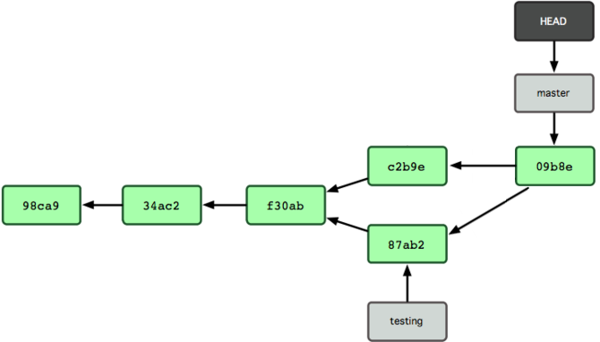
Einfaches Merging
Neben dem "git merge" Kommando gibt es auch noch das "git rebase [Branch-Name]" Kommando. Es hat den selben Effekt wie das "git merge" Kommando,
jedoch sorgt es für eine "saubere" Historie. Hierbei wird der gemeinsame Ursprung der beiden Branches ermittelt. Danach werden alle Commits des Branches,
auf dem gerade gearbeitet wird, in eine temporäre Datei geschrieben.
Nun wird dieser Branch auf den Commit des Ursprungs zurückgesetzt. Als Letztes werden alle Commits, welche in der temporären Datei gespeichert waren,
auf den Ziel-Branch angewendet. Somit wird eine lineare Historie vorgetäuscht.

Einfaches Rebasing